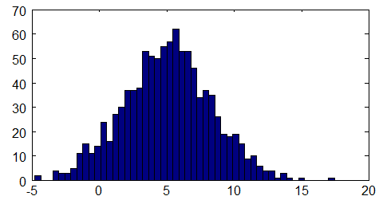

<!DOCTYPE html>

<!-- Mirrored from www.bogotobogo.com/WebTechnologies/machinelearning.php by HTTrack Website Copier/3.x [XR&CO'2014], Mon, 11 Dec 2017 15:08:49 GMT -->
<head>
  <title>Web Technologies: Machine Learning - 2017</title>
  <meta content="Web Technologies: Machine Learning" name="description" />
  <meta content="Web Technologies, Machine Learning, Matlab, OpenCV, Octave, scikit-learn" name="keywords" />
  <meta name="viewport" content="width=device-width, initial-scale=1">

  <link href="http://netdna.bootstrapcdn.com/bootstrap/3.0.0/css/bootstrap.no-icons.min.css" rel="stylesheet">
  <link href="http://netdna.bootstrapcdn.com/font-awesome/4.0.3/css/font-awesome.css" rel="stylesheet">
  <link rel="stylesheet" href="http://fonts.googleapis.com/css?family=Alice|Open+Sans:400,300,700">
  <link rel="stylesheet" href="../public/css/app.css">
  <link rel="stylesheet" href="../public/css/styles.css">
  <link rel="stylesheet" href="../public/css/bogostyleWidePreNew.css">
</head>

<body class="home">
    <nav class="navbar navbar-default navbar-fixed-top">
    <div class="container-fluid">      
      <div class="navbar-header">
        <!--<button type="button" class="navbar-toggle collapsed" data-toggle="collapse" data-target="#navbar" aria-expanded="false" aria-controls="navbar"> -->
        <button type="button" class="navbar-toggle collapsed" data-toggle="collapse" data-target=".navbar-collapse" aria-expanded="false" aria-controls="navbar"> 
          <span class="sr-only">Toggle navigation</span> 
          <span class="icon-bar"></span> 
          <span class="icon-bar"></span> 
          <span class="icon-bar"></span> 
        </button>
        <a class="navbar-brand" href="../index-2.html">BogoToBogo</a>
      </div>
      
      <div class="navbar-collapse collapse">
        
        <ul class="nav navbar-nav">
          <li class="active"><a href="../index-2.html">Home</a></li>
          <li><a href="../about_us.html">About</a></li>
          <li><a href="../Hadoop/BigData_hadoop_Install_on_ubuntu_single_node_cluster.html">Big Data</a></li>
          <li><a href="../python/scikit-learn/Artificial-Neural-Network-ANN-1-Introduction.html">Machine Learning</a></li>
          <li><a href="../AngularJS/AngularJS_Introduction.html">AngularJS</a></li> 
          <li><a href="../python/pytut.html">Python</a></li>
          <li><a href="../cplusplus/cpptut.html">C++</a></li>
          <li><a href="../DevOps/DevOps_Jenkins_Chef_Puppet_Graphite_Logstash.html">DevOps </a></li>
          <li><a href="../Algorithms/algorithms.html">Algorithms</a></li> 
          <li class="dropdown">
            <a href="#" class="dropdown-toggle" data-toggle="dropdown">More...<b class="caret"></b></a>
            <ul class="dropdown-menu">
           
              <li><a href="../Qt/Qt5_Creating_QtQuick2_QML_Application_Animation_A.html">Qt 5</a></li>                           
              <li><a href="../Android/android.html">Android</a></li>
              
              <li><a href="../Linux/linux_tips1.html">Linux</a></li>
              <li><a href="../Java/tutorials/on_java.html">Java</a></li>
              <li><a href="../CSharp/.netframework.html">CSharp</a></li>
              <li><a href="../VideoStreaming/videostreaming_etc.html">Video Streaming</a></li>
              <li><a href="../FFMpeg/ffmpeg_fade_in_fade_out_transitions_effects_filters_slideshow_concat.html">FFmpeg</a></li>
              <li><a href="../Matlab/Matlab_Tutorial_Manipulating_Audio_I_Reverse_Delay_Tone_Control_Changing_Speed_Removing_Vocals.html">Matlab</a></li>
              <li><a href="../python/Django/Python_Django_Forums_Shared_Host.html">Django 1.8</a></li>
              <li><a href="../Laravel5/Laravel5_ToDo_List_Sample.html">Laravel 5.2</a></li>
              <li><a href="../RubyOnRails/RubyOnRails.html">Ruby On Rails</a></li>
              <li><a href="../HTML5/HTML5_Tutorial.html">HTML5 & CSS</a></li>
              <li><a href="../AmazingPlaces/index.html" target="_blank">
Earth</a> </li>
            </ul>
          </li>
        </ul>      
      </div>
    </div>  
  </nav>  

  <div id="main">
    <div class="container">
      <div class="row section featured topspace">
        <div class="row">
          <div class="col-sm-9 col-md-9">
            <h2 class="section-title">Web Technologies
- Machine Learning 2017       <g:plusone></g:plusone></h2>
            <div class="icon-image">
                 
            </div>
            <div class="SocialLinks">
  <span class='st__large' displayText=''></span>
  <br><br>
  <div align="center">
  <span class='st_facebook_large' displayText='Facebook'></span>
  <span class='st_twitter_large' displayText='Tweet'></span>
  <span class='st_linkedin_large' displayText='LinkedIn'></span>
  </div>
  <br><br>
  <script type="text/javascript" src="http://w.sharethis.com/button/buttons.js"></script>
  <script type="text/javascript">stLight.options({publisher: "b9569c43-5f56-4501-92f0-4bf4aa8fceb0", doNotHash: false, doNotCopy: true, hashAddressBar: false});</script>
</div>

<div id="bookmarkshare">
  <script type="text/javascript">var addthis_config = {"data_track_clickback":true};</script>
  <a class="addthis_button" href="http://www.addthis.com/bookmark.php?v=250&amp;username=khhong7"></a>
  <script type="text/javascript" src="http://s7.addthis.com/js/250/addthis_widget.js#username=khhong7"></script>
</div>

<br>
<hr>
<br>


<!-- Google bogo1 ad -->
<!-- Google search box -->


<!-- bogo1 -->
<div>
  <script async src="http://pagead2.googlesyndication.com/pagead/js/adsbygoogle.js"></script>
  <!-- bogo1 -->
  <ins class="adsbygoogle"
     style="display:inline-block;width:728px;height:90px"
     data-ad-client="ca-pub-4716428189734495"
     data-ad-slot="6542308167"></ins>
  <script>
   (adsbygoogle = window.adsbygoogle || []).push({});
  </script>
</div>


<!-- Google search box -->
<div class="AdSenseSearch">
  bogotobogo.com site search:
  <form action="http://www.google.com/" id="cse-search-box" target="_blank">
    <div>
      <input type="hidden" name="cx" value="partner-pub-4716428189734495:1794050961" />
      <input type="hidden" name="ie" value="UTF-8" />
      <!--<input type="text" name="q" size="55" />-->
      <input type="text" name="q" size="" width="90%"/>
      <input type="submit" name="sa" value="Search" />
    </div>
  </form>
  <script type="text/javascript" src="http://www.google.com/coop/cse/brand?form=cse-search-box&amp;lang=en"></script>
</div>


<hr>
            <br><br><br>
<div class="subtitle" id="machinelearning">Machine Learning</div>
<br/>
<p>Arthus Samuel(1959)<br/>
Machine Learning is the field of study that gives computers the ability to learn without being explicitly programmed.</p>
<p>Tom Mitchell(1998) <br/>
Well-posed learning problem: A computer program is said to <strong>learn</strong> from experience <strong>E</strong> with respect to some task <strong>T</strong> and some performance measure <strong>P</strong>, if its performance on <strong>T</strong>, as measured by <strong>P</strong>, improves with experience <strong>E</strong>.</p>
<br/>
<div class="subtitle_2nd" id="machinelearning_alog">Machine Learning Algorithms</div>
<ol>
<li>Supervised learning<br/>
<strong>right answer</strong> is given and perform regression based on the answer.<br/>
     example: classification problem.</li>
<li>Unsupervised learning</li>
<li>Others: Reinforcement learning, recommneder systems</li>
</ol>
<script src="http://www.google.com/trends/embed.js?hl=en-US&amp;q=machine+learning&amp;cmpt=q&amp;content=1&amp;cid=TIMESERIES_GRAPH_0&amp;export=5&amp;w=500&amp;h=330" type="text/javascript"></script>
<br/>
<br/>
<script src="http://www.google.com/trends/embed.js?hl=en-US&amp;q=machine+learning&amp;cmpt=q&amp;content=1&amp;cid=GEO_MAP_0_0&amp;export=5&amp;w=500&amp;h=530" type="text/javascript"></script>
<br/>
<br/>
<blockquote>
 
If an expert system--brilliantly designed, engineered and implemented--cannot learn not to repeat its mistakes, it is not as intelligent as a worm or a sea anemone or a kitten. <br/>
-Oliver G. Selfridge, from The Gardens of Learning. 	 
</blockquote>
<br/>
<blockquote>
"Find a bug in a program, and fix it, and the program will work today. Show the program how to find and fix a bug, and the program will work forever." <br/>
- Oliver G. Selfridge, in AI's Greatest Trends and Controversies, Marti A. Hearst and Haym Hirsh, Editors. IEEE Intelligent Systems (January/February 2000). A timely and thought provoking collection of views from AI scholars and practitioners. 
</blockquote>
<br/>
<p><strong>Machine learning</strong> is a scientific discipline that is concerned with the design and development of algorithms that allow computers to evolve behaviors based on empirical data, such as from sensor data or databases. A learner can take advantage of examples (data) to capture characteristics of interest of their unknown underlying probability distribution. Data can be seen as examples that illustrate relations between observed variables. <br/>
A major focus of machine learning research is to automatically learn to recognize complex patterns and make intelligent decisions based on data; the difficulty lies in the fact that the set of all possible behaviors given all possible inputs is too large to be covered by the set of observed examples (training data). Hence the learner must generalize from the given examples, so as to be able to produce a useful output in new cases. Artificial intelligence is a closely related field, as are <strong>probability theory</strong> and <strong>statistics</strong>, <strong>data mining</strong>, <strong>pattern recognition</strong>, <strong>adaptive control</strong>, <strong>computational neuroscience</strong> and <strong>theoretical computer science</strong>.<br/>
- from wiki
<a href="http://en.wikipedia.org/wiki/Machine_learning" target="_blank">wiki</a>
</p>
<br/>
<br/>
<br/>
<br/>
<div class="subtitle" id="tuts">My tutorials on Machine Learning</div>
<br/>
<p>Though I've been keenly watching the developments of machine learning for a while, I recently started to picking up real stuff. I referred my work as tutorials, however, it's just my notes.</p>
<br/>
<div class="subtitle_2nd" id="machinelearning_sci-kit-learn">Machine Learning with scikit-learn</div>
<p><b>scikit-learn</b> is a machine learning library based on SciPy.</p>
<p>I wrote a tutorial: <a href="../python/scikit-learn/scikit_machine_learning_Supervised_Learning_Unsupervised_Learning.html" target="_blank">scikit-learn</a>.</p>
<p>Well, I barely followed the <a href="http://www.astroml.org/sklearn_tutorial/index.html" target="_blank">official guide</a>.</p>
<p>Anyway, I am a moderator for scikit-learn group at linkedin. Please join <a href="http://www.linkedin.com/groups/scikitlearn-6654417/about" target="_blank">scikit-learn</a></p>
<br/>
<br/>
<div class="subtitle_2nd" id="opencv">OpenCV</div>
<p>I haven't got deeply into OvenCV's machine learning features, but it has some. I wrote a tutorial for C and Python with OpenCV (though it's most on video and digital image processing). Please take a look at <a href="../python/OpenCV_Python/python_opencv3_Changing_ColorSpaces_RGB_HSV_HLS.html" target="_blank">OpenCV</a>.</p>
<br/>
<br/>
<div class="subtitle_2nd" id="matlab">Matlab</div>
<p>This is THE ONE that everyone knows. Though there are so many good guides out there, again, I also wrote  my notes on it. Probably, it is a a sort of 'Machine Learning in 24 days'. Please visit my <a href="http://en.wikipedia.org/wiki/Video4Linux" target="_blank">Matlab pages</a>. It's mostly on signal processing (image/audio/video). </p>
<br/>
<br/>
<div class="subtitle_2nd" id="octave">Octave</div>
<p>This is open source version of Matlab. I briefly wrote introduction in the other section of this page.</p>
<br/>
<br/>
<div class="subtitle_2nd" id="nlp">NLP with python NLTK</div>
<p>This is for Natural Language Processing via Python tool called NLTK. I've just started tutorials which are very basic. Please visit <a href="../python/NLTK/NLTK_install.html" target="_blank">NLTK (Natural Language Toolkit)</a>.</p>
<br/>
<br/>
<br/>
<br/>
<div class="subtitle" id="Articles">Articles</div>
<p>Here I'll list some of the interesting posts from other sources.</p>
<br/>
<br/>
<div class="subtitle_2nd" id="mistakes">5 Mistakes Programmers Make when Starting in Machine Learning</div>
<p>From <a href="http://machinelearningmastery.com/mistakes-programmers-make-when-starting-in-machine-learning/" target="_blank">machinelearningmastery.com</a> - Jan. 2014</p>
<ol>
<li>Put Machine Learning on a pedestal - Don't put machine learning on a pedestal
 </li>
<li>Write Machine Learning Code - Don't write machine learning code
 </li>
<li>Doing Things Manually - Don't do things manually 
 </li>
<li>Reinvent Solutions to Common Problems - Don't reinvent solutions to common problems
 </li>
<li>Ignoring the Math - Don't ignore the math
 </li>
</ol>
<br/>
<br/>
<br/>
<div class="subtitle" id="machinelearning_octave">Machine Learning with Octave</div>
<p>There are several tools that can help us to learn machine learning algorithms such as Matlab, NumPy, R, and Octave, etc. Among them, we're going to use Octave which seems to be most effective in terms of learning curve and features it has.</p>
<br/>

<br/>
<p>So, let's install Octave from <a href="http://sourceforge.net/projects/octave/files/Octave Windows binaries/" target="_blank">sourceforge.net</a>.</p>
<br/>
<br/>
<br/>
<br/>
<div class="subtitle_2nd" id="octave_prompt">Octave - prompt change and more</div>
<p>To customize the prompt, we use <strong>PS1()</strong>. In this case, we want to switch it to "<strong>&gt;&gt; </strong>".</p>
<pre>
PS1 ("&gt;&gt; ")
</pre>
<p>To check current directory:</p>
<pre>
&gt;&gt; pwd
ans = C:\Octave\3.2.4_gcc-4.4.0\bin
</pre>
<br/>
<p>To draw histogram from the Gaussian distribution with 50 intervals:</p>
<pre>
&gt;&gt; w = 5 + sqrt(10)*(randn(1,1000))
&gt;&gt; hist(w,50)
</pre>
<p>Then, we get this picture:</p>

<br/>
<br/>
<br/>
<div class="subtitle_2nd" id="octave_matrix">Octave - Matrix</div>
<pre>
&gt;&gt; % Matrix
&gt;&gt; m = [1 2; 3 4; 5 6]
m =
   1   2
   3   4
   5   6
&gt;&gt; size(m)
ans =
   3   2
&gt;&gt; m(2,:)  % 2nd row only
ans =

   3   4
&gt;&gt; m(:,2)  % 2nd column only
ans =

   2
   4
   6
&gt;&gt; m([1:3],:)  % all
ans =

   1   2
   3   4
   5   6

&gt;&gt; m([1 3],:)  % 1st &amp; 3rd rows only
ans =

   1   2
   5   6
</pre>
<p>To check the variable:</p>
<pre>
&gt;&gt; who
Variables in the current scope:

ans  m    w

&gt;&gt; whos  % for more info
Variables in the current scope:

  Attr Name        Size                     Bytes  Class
  ==== ====        ====                     =====  =====
       ans         1x29                        29  char
       m           3x2                         48  double
       w           1x1000                    8000  double

Total is 1035 elements using 8077 bytes
</pre>
<br/>
<br/>
<div class="subtitle_2nd" id="octave_fileread">Octave - Loading a File</div>
<p>Here is how to load a data file:</p>
<pre>
&gt;&gt; cd 'c:\test'
&gt;&gt; load('population.txt')
&gt;&gt; who
Variables in the current scope:

ans         m           population  w

&gt;&gt; whos
Variables in the current scope:

  Attr Name            Size                     Bytes  Class
  ==== ====            ====                     =====  =====
       ans             1x7                          7  char
       m               3x2                         48  double
       population     19x2                        304  double
       w               1x1000                    8000  double

Total is 1051 elements using 8359 bytes

&gt;&gt; population
population =

      1    200
   1000    310
   1750    791
   1800    978
   1850   1262
   1900   1650
   1950   2519
   1955   2756
   1960   2982
   1965   3335
   1970   3692
   1975   4068
   1980   4435
   1985   4831
   1990   5263
   1995   5674
   2000   6070
   2005   6454
   2010   6972
</pre>
<br/>

<!-- Google bogo_square_ad -->
<div>
  <script type="text/javascript">
    google_ad_client = "ca-pub-4716428189734495";
    /* bogo_LargeRectangle_336_280 */
    google_ad_slot = "2712696561";
    google_ad_width = 336;
    google_ad_height = 280;
  </script>
  <script type="text/javascript"
    src="http://pagead2.googlesyndication.com/pagead/show_ads.js">
  </script>
</div>
<br>


<br/>
<div class="subtitle_2nd" id="octave_clear">Octave - Removing data</div>
<p>Here is how to remove data:</p>
<pre>
&gt;&gt; whos
Variables in the current scope:

  Attr Name            Size                     Bytes  Class
  ==== ====            ====                     =====  =====
       ans             1x7                          7  char
       m               3x2                         48  double
       population     19x2                        304  double
       w               1x1000                    8000  double

Total is 1051 elements using 8359 bytes

&gt;&gt; clear w
&gt;&gt; whos
Variables in the current scope:

  Attr Name            Size                     Bytes  Class
  ==== ====            ====                     =====  =====
       ans             1x7                          7  char
       m               3x2                         48  double
       population     19x2                        304  double

Total is 51 elements using 359 bytes
</pre>
<br/>
<br/>
<div class="subtitle_2nd" id="octave_save">Octave - Saving data</div>
<p>Here is how to save data: take the most recent population data from 11th row to 19th row, and then save it to recent.data file.</p>
<pre>
&gt;&gt; v = population(11:19)
v =

   1970   1975   1980   1985   1990   1995   2000   2005   2010

&gt;&gt; save recent.data v;
</pre>
<p>The saved recent.data file looks like this:</p>
<pre>
# Created by Octave 3.2.4, Tue Jul 02 15:53:33 2013 Pacific Daylight Time <unknown@unknown>
# name: v
# type: matrix
# rows: 1
# columns: 9
 1970 1975 1980 1985 1990 1995 2000 2005 2010
</unknown@unknown></pre>
<br/>
<br/>
<div class="subtitle_2nd" id="octave_matrix_append">Octave - more Matrix</div>
<pre>
&gt;&gt; m(:,2) = [10; 11; 12;]  % assign new values to 2nd column
m =

    1   10
    3   11
    5   12
&gt;&gt; m = [m, [100; 101; 102]] % append another column
m =

     1    10   100
     3    11   101
     5    12   102
&gt;&gt; n = [1000; 1001; 1002]
n =

   1000
   1001
   1002

&gt;&gt; r = [m n]  % column-wise append 
r =

      1     10    100   1000
      3     11    101   1001
      5     12    102   1002
&gt;&gt; n = [1000 1001 1002]
n =

   1000   1001   1002
&gt;&gt; s = [m; n]  % row-wise append
s =

      1     10    100
      3     11    101
      5     12    102
   1000   1001   1002
&gt;&gt; s(:)  % put all elements of m into a column vector
ans =

      1
      3
      5
   1000
     10
     11
     12
   1001
    100
    101
    102
   1002
&gt;&gt; clear  % clear all
&gt;&gt; % Matrix Multiplication
&gt;&gt;
&gt;&gt; A = [1 2; 3 4; 5 6]
A =

   1   2
   3   4
   5   6

&gt;&gt; size(A)
ans =

   3   2

&gt;&gt; B = [10 11; 12 13;]
B =

   10   11
   12   13

&gt;&gt; size(B)
ans =

   2   2

&gt;&gt; C = A * B
C =

    34    37
    78    85
   122   133
&gt;&gt; size(C)
ans =

   3   2

&gt;&gt; % Element-wise multiplication using dot(.)
&gt;&gt; B = [10 11; 12 13; 14 15;]
B =

   10   11
   12   13
   14   15

&gt;&gt; A.*B
ans =

   10   22
   36   52
   70   90
&gt;&gt; A
A =

   1   2
   3   4
   5   6

&gt;&gt; A.^2  % A[i]^2
ans =

    1    4
    9   16
   25   36
&gt;&gt; A
A =

   1   2
   3   4
   5   6

&gt;&gt; 1./A  % inverse each element of A
ans =

   1.00000   0.50000
   0.33333   0.25000
   0.20000   0.16667
&gt;&gt; A'  % transpose of A
ans =

   1   3   5
   2   4   6
&gt;&gt; max(A) % column-wise max
ans =

   5   6
&gt;&gt; A &lt;= 4 % element-wise comparison
ans =

   1   1
   1   1
   0   0

</pre>
<p>For more on <strong>octave</strong>, please visit <a href="gnu_octave.php" target="_blank">http://www.bogotobogo.com/WebTechnologies/gnu_octave.php</a>.</p>
<br/>
<br/>

          </div>
          <div class="col-sm-3 col-md-3">
  	    <div class="g-person" data-width="1" data-href="//plus.google.com/111664369941456137911" data-rel="author">
  	    </div>
            <div class="resume">
              <p>Ph.D. / Golden Gate Ave, San Francisco / Seoul National Univ / Carnegie Mellon / UC Berkeley / DevOps / Deep Learning / Visualization</p>
            </div>
  	    <div>
                
<div class="skyscraper">
  <br>


<div class="skyscraper">

  <div class="bogo-paypal">
    <!-- Paypal Donate button -->
    <p><i>Sponsor Open Source development activities and free contents for everyone.</i></p>

    <form action="https://www.paypal.com/cgi-bin/webscr" method="post" target="_top">
    <input type="hidden" name="cmd" value="_s-xclick">
    <input type="hidden" name="encrypted" value="-----BEGIN PKCS7-----MIIHRwYJKoZIhvcNAQcEoIIHODCCBzQCAQExggEwMIIBLAIBADCBlDCBjjELMAkGA1UEBhMCVVMxCzAJBgNVBAgTAkNBMRYwFAYDVQQHEw1Nb3VudGFpbiBWaWV3MRQwEgYDVQQKEwtQYXlQYWwgSW5jLjETMBEGA1UECxQKbGl2ZV9jZXJ0czERMA8GA1UEAxQIbGl2ZV9hcGkxHDAaBgkqhkiG9w0BCQEWDXJlQHBheXBhbC5jb20CAQAwDQYJKoZIhvcNAQEBBQAEgYC0In+maN+zseQtRj6SJqP9kj2LLvKf0yFklTm01uHY7UwgB3YJ0MZwvi6iERXfh4x2/KVYyMzY6elATG68c3gd6gb0Pqca380dXCg2Xua8jlW0pTZ3UabUNkpYi0iIwMSUsvWKbIw9eX8cBljOrYU1CXNuk46c0Yz2J3lGG+xCZTELMAkGBSsOAwIaBQAwgcQGCSqGSIb3DQEHATAUBggqhkiG9w0DBwQI23eIgGIDbFqAgaDMolOA+os0Y06D0j9NgHZJahDCSSl3deolhu6gz8hNd0SKwNAMBDPd5LBjJ7v6QgReCprB9L2E6CVpXZwgyLnzPC/wHbQG0Qd9sc/CqbiFy2FaJodDtPbRS8mOh+aHph0pNXgZ2kRA8uqVGIRF5gc0d6wqx7+NrPK5FehCMWoGGTmfTTMlykPVQhwDAY8+QFNSbCnqih5GXX62XpkmMJWFoIIDhzCCA4MwggLsoAMCAQICAQAwDQYJKoZIhvcNAQEFBQAwgY4xCzAJBgNVBAYTAlVTMQswCQYDVQQIEwJDQTEWMBQGA1UEBxMNTW91bnRhaW4gVmlldzEUMBIGA1UEChMLUGF5UGFsIEluYy4xEzARBgNVBAsUCmxpdmVfY2VydHMxETAPBgNVBAMUCGxpdmVfYXBpMRwwGgYJKoZIhvcNAQkBFg1yZUBwYXlwYWwuY29tMB4XDTA0MDIxMzEwMTMxNVoXDTM1MDIxMzEwMTMxNVowgY4xCzAJBgNVBAYTAlVTMQswCQYDVQQIEwJDQTEWMBQGA1UEBxMNTW91bnRhaW4gVmlldzEUMBIGA1UEChMLUGF5UGFsIEluYy4xEzARBgNVBAsUCmxpdmVfY2VydHMxETAPBgNVBAMUCGxpdmVfYXBpMRwwGgYJKoZIhvcNAQkBFg1yZUBwYXlwYWwuY29tMIGfMA0GCSqGSIb3DQEBAQUAA4GNADCBiQKBgQDBR07d/ETMS1ycjtkpkvjXZe9k+6CieLuLsPumsJ7QC1odNz3sJiCbs2wC0nLE0uLGaEtXynIgRqIddYCHx88pb5HTXv4SZeuv0Rqq4+axW9PLAAATU8w04qqjaSXgbGLP3NmohqM6bV9kZZwZLR/klDaQGo1u9uDb9lr4Yn+rBQIDAQABo4HuMIHrMB0GA1UdDgQWBBSWn3y7xm8XvVk/UtcKG+wQ1mSUazCBuwYDVR0jBIGzMIGwgBSWn3y7xm8XvVk/UtcKG+wQ1mSUa6GBlKSBkTCBjjELMAkGA1UEBhMCVVMxCzAJBgNVBAgTAkNBMRYwFAYDVQQHEw1Nb3VudGFpbiBWaWV3MRQwEgYDVQQKEwtQYXlQYWwgSW5jLjETMBEGA1UECxQKbGl2ZV9jZXJ0czERMA8GA1UEAxQIbGl2ZV9hcGkxHDAaBgkqhkiG9w0BCQEWDXJlQHBheXBhbC5jb22CAQAwDAYDVR0TBAUwAwEB/zANBgkqhkiG9w0BAQUFAAOBgQCBXzpWmoBa5e9fo6ujionW1hUhPkOBakTr3YCDjbYfvJEiv/2P+IobhOGJr85+XHhN0v4gUkEDI8r2/rNk1m0GA8HKddvTjyGw/XqXa+LSTlDYkqI8OwR8GEYj4efEtcRpRYBxV8KxAW93YDWzFGvruKnnLbDAF6VR5w/cCMn5hzGCAZowggGWAgEBMIGUMIGOMQswCQYDVQQGEwJVUzELMAkGA1UECBMCQ0ExFjAUBgNVBAcTDU1vdW50YWluIFZpZXcxFDASBgNVBAoTC1BheVBhbCBJbmMuMRMwEQYDVQQLFApsaXZlX2NlcnRzMREwDwYDVQQDFAhsaXZlX2FwaTEcMBoGCSqGSIb3DQEJARYNcmVAcGF5cGFsLmNvbQIBADAJBgUrDgMCGgUAoF0wGAYJKoZIhvcNAQkDMQsGCSqGSIb3DQEHATAcBgkqhkiG9w0BCQUxDxcNMTUwOTA2MTYwNDAxWjAjBgkqhkiG9w0BCQQxFgQUuyx70nay4O6eJQs3x4WiAm4/7DkwDQYJKoZIhvcNAQEBBQAEgYAN7yS/34G8dBK6CfFf5g4rQk/H8s7D/aUmIzppGWOoXR7nZuXQo99wSBlQsPdeFtB+a+NNapf6lC4ibUTjgSpbu1gscGHH4Y+QtXl03bt5qgaSoFhZsCJKubwRHPHGHDGVx+tQmQ2DHk09lXjjL61FpB6iqkiFFvw4vfixsoeI6g==-----END PKCS7-----
    ">
    <input type="image" src="https://www.paypalobjects.com/webstatic/en_US/btn/btn_donate_pp_142x27.png" border="0" name="submit" alt="PayPal - The safer, easier way to pay online!">
    
    </form>
    <p><i>Thank you.</i></p>
    <p>- <a href="../about_us.html" target="_blank">K Hong</a></p>
    <!-- End of Paypal Donate button   -->
  </div>


  <script async src="http://pagead2.googlesyndication.com/pagead/js/adsbygoogle.js"></script>
  <!-- bogo_skyscraper -->
  <ins class="adsbygoogle"
       style="display:inline-block;width:160px;height:600px"
       data-ad-client="ca-pub-4716428189734495"
       data-ad-slot="5321096966"></ins>
  <script>
  (adsbygoogle = window.adsbygoogle || []).push({});
  </script>


  <br><br>


</div></div>


<!-- Place this tag after the last widget tag. -->
<script type="text/javascript">
        (function() {
          var po = document.createElement('script'); po.type = 'text/javascript'; po.async = true;
          po.src = 'https://apis.google.com/js/platform.js';
          var s = document.getElementsByTagName('script')[0]; s.parentNode.insertBefore(po, s);
        })();
</script>
  	    </div>
  	    <div class="side_menu">
                <br /><br />

<div class="skyscraper">
  <br>


<div class="skyscraper">

  <div class="bogo-paypal">
    <!-- Paypal Donate button -->
    <p><i>Sponsor Open Source development activities and free contents for everyone.</i></p>

    <form action="https://www.paypal.com/cgi-bin/webscr" method="post" target="_top">
    <input type="hidden" name="cmd" value="_s-xclick">
    <input type="hidden" name="encrypted" value="-----BEGIN PKCS7-----MIIHRwYJKoZIhvcNAQcEoIIHODCCBzQCAQExggEwMIIBLAIBADCBlDCBjjELMAkGA1UEBhMCVVMxCzAJBgNVBAgTAkNBMRYwFAYDVQQHEw1Nb3VudGFpbiBWaWV3MRQwEgYDVQQKEwtQYXlQYWwgSW5jLjETMBEGA1UECxQKbGl2ZV9jZXJ0czERMA8GA1UEAxQIbGl2ZV9hcGkxHDAaBgkqhkiG9w0BCQEWDXJlQHBheXBhbC5jb20CAQAwDQYJKoZIhvcNAQEBBQAEgYC0In+maN+zseQtRj6SJqP9kj2LLvKf0yFklTm01uHY7UwgB3YJ0MZwvi6iERXfh4x2/KVYyMzY6elATG68c3gd6gb0Pqca380dXCg2Xua8jlW0pTZ3UabUNkpYi0iIwMSUsvWKbIw9eX8cBljOrYU1CXNuk46c0Yz2J3lGG+xCZTELMAkGBSsOAwIaBQAwgcQGCSqGSIb3DQEHATAUBggqhkiG9w0DBwQI23eIgGIDbFqAgaDMolOA+os0Y06D0j9NgHZJahDCSSl3deolhu6gz8hNd0SKwNAMBDPd5LBjJ7v6QgReCprB9L2E6CVpXZwgyLnzPC/wHbQG0Qd9sc/CqbiFy2FaJodDtPbRS8mOh+aHph0pNXgZ2kRA8uqVGIRF5gc0d6wqx7+NrPK5FehCMWoGGTmfTTMlykPVQhwDAY8+QFNSbCnqih5GXX62XpkmMJWFoIIDhzCCA4MwggLsoAMCAQICAQAwDQYJKoZIhvcNAQEFBQAwgY4xCzAJBgNVBAYTAlVTMQswCQYDVQQIEwJDQTEWMBQGA1UEBxMNTW91bnRhaW4gVmlldzEUMBIGA1UEChMLUGF5UGFsIEluYy4xEzARBgNVBAsUCmxpdmVfY2VydHMxETAPBgNVBAMUCGxpdmVfYXBpMRwwGgYJKoZIhvcNAQkBFg1yZUBwYXlwYWwuY29tMB4XDTA0MDIxMzEwMTMxNVoXDTM1MDIxMzEwMTMxNVowgY4xCzAJBgNVBAYTAlVTMQswCQYDVQQIEwJDQTEWMBQGA1UEBxMNTW91bnRhaW4gVmlldzEUMBIGA1UEChMLUGF5UGFsIEluYy4xEzARBgNVBAsUCmxpdmVfY2VydHMxETAPBgNVBAMUCGxpdmVfYXBpMRwwGgYJKoZIhvcNAQkBFg1yZUBwYXlwYWwuY29tMIGfMA0GCSqGSIb3DQEBAQUAA4GNADCBiQKBgQDBR07d/ETMS1ycjtkpkvjXZe9k+6CieLuLsPumsJ7QC1odNz3sJiCbs2wC0nLE0uLGaEtXynIgRqIddYCHx88pb5HTXv4SZeuv0Rqq4+axW9PLAAATU8w04qqjaSXgbGLP3NmohqM6bV9kZZwZLR/klDaQGo1u9uDb9lr4Yn+rBQIDAQABo4HuMIHrMB0GA1UdDgQWBBSWn3y7xm8XvVk/UtcKG+wQ1mSUazCBuwYDVR0jBIGzMIGwgBSWn3y7xm8XvVk/UtcKG+wQ1mSUa6GBlKSBkTCBjjELMAkGA1UEBhMCVVMxCzAJBgNVBAgTAkNBMRYwFAYDVQQHEw1Nb3VudGFpbiBWaWV3MRQwEgYDVQQKEwtQYXlQYWwgSW5jLjETMBEGA1UECxQKbGl2ZV9jZXJ0czERMA8GA1UEAxQIbGl2ZV9hcGkxHDAaBgkqhkiG9w0BCQEWDXJlQHBheXBhbC5jb22CAQAwDAYDVR0TBAUwAwEB/zANBgkqhkiG9w0BAQUFAAOBgQCBXzpWmoBa5e9fo6ujionW1hUhPkOBakTr3YCDjbYfvJEiv/2P+IobhOGJr85+XHhN0v4gUkEDI8r2/rNk1m0GA8HKddvTjyGw/XqXa+LSTlDYkqI8OwR8GEYj4efEtcRpRYBxV8KxAW93YDWzFGvruKnnLbDAF6VR5w/cCMn5hzGCAZowggGWAgEBMIGUMIGOMQswCQYDVQQGEwJVUzELMAkGA1UECBMCQ0ExFjAUBgNVBAcTDU1vdW50YWluIFZpZXcxFDASBgNVBAoTC1BheVBhbCBJbmMuMRMwEQYDVQQLFApsaXZlX2NlcnRzMREwDwYDVQQDFAhsaXZlX2FwaTEcMBoGCSqGSIb3DQEJARYNcmVAcGF5cGFsLmNvbQIBADAJBgUrDgMCGgUAoF0wGAYJKoZIhvcNAQkDMQsGCSqGSIb3DQEHATAcBgkqhkiG9w0BCQUxDxcNMTUwOTA2MTYwNDAxWjAjBgkqhkiG9w0BCQQxFgQUuyx70nay4O6eJQs3x4WiAm4/7DkwDQYJKoZIhvcNAQEBBQAEgYAN7yS/34G8dBK6CfFf5g4rQk/H8s7D/aUmIzppGWOoXR7nZuXQo99wSBlQsPdeFtB+a+NNapf6lC4ibUTjgSpbu1gscGHH4Y+QtXl03bt5qgaSoFhZsCJKubwRHPHGHDGVx+tQmQ2DHk09lXjjL61FpB6iqkiFFvw4vfixsoeI6g==-----END PKCS7-----
    ">
    <input type="image" src="https://www.paypalobjects.com/webstatic/en_US/btn/btn_donate_pp_142x27.png" border="0" name="submit" alt="PayPal - The safer, easier way to pay online!">
    
    </form>
    <p><i>Thank you.</i></p>
    <p>- <a href="../about_us.html" target="_blank">K Hong</a></p>
    <!-- End of Paypal Donate button   -->
  </div>


  <script async src="http://pagead2.googlesyndication.com/pagead/js/adsbygoogle.js"></script>
  <!-- bogo_skyscraper -->
  <ins class="adsbygoogle"
       style="display:inline-block;width:160px;height:600px"
       data-ad-client="ca-pub-4716428189734495"
       data-ad-slot="5321096966"></ins>
  <script>
  (adsbygoogle = window.adsbygoogle || []).push({});
  </script>


  <br><br>


</div></div>

<!-- WebTechnologies_list_INNER.php -->
<br><br><br>
<h1>WebTechnologies</h1>
   <a href="GIS_Software_Tools.html">GIS(Geographic Information Systems)</a>
   <br><br>
   <a href="List_of_RSS_Feeds.html">List of RSS Feeds</a>
   <br><br>
   <a href="M2M_Machine_to_Machine_Mobile_to_Mobile.html">M2M (Machine to Machine)</a>
   <br><br>
   <a href="OpenAPI_RESTful.html">Open APIs, SOAP, and REST</a>
   <br><br>
   <a href="TechBlogs.html">Tech Blogs</a>
   <br><br>
   <a href="WiFi.html">Wi-Fi</a>
   <br><br>
   <a href="WordPress_Session_Expired_Log_In.html">Session has expired, please log-in again, word press</a> 
   <br><br>
   <a href="bitcoin_mining_buy_pay_encryption_algorithm_sha256_how_it_works.html">Bit Coin</a> 
   <br><br>
   <a href="cloudcomputing.html">Cloud Computing</a> 
   <br><br>
   <a href="distributedcomputing.html">Distributed Computing</a>
   <br><br>
   <a href="gnu_octave.php">GNU Octave</a>
   <br><br>
   <a href="ipTV.html">ipTV</a>
   <br><br>
   <a href="n-screen_connected_devices.html">N-Screen - Connected Devices</a>
   <br><br>
      <a href="webBrowsers.html">Web Browsers</a>
   <br><br>


<br />


  		
  	    </div>
          </div>
        </div>
      </div> <!-- / section -->
    </div>
  </div>

  <br>
<br>
<br>
<br>

<div class="custom-disqus">
<!-- Disqus -->
<!-- Disqus disabled Oct 17, 2016 
<div id="disqus_thread"></div>
<script>
    /**
     *  RECOMMENDED CONFIGURATION VARIABLES: EDIT AND UNCOMMENT THE SECTION BELOW TO INSERT DYNAMIC VALUES FROM YOUR PLATFORM OR CMS.
     *  LEARN WHY DEFINING THESE VARIABLES IS IMPORTANT: https://disqus.com/admin/universalcode/#configuration-variables
     */
     
    var disqus_config = function () {
        this.page.url = window.location.href;
        this.page.identifier = document.title;
    };
    
    (function() {  // REQUIRED CONFIGURATION VARIABLE: EDIT THE SHORTNAME BELOW
        var d = document, s = d.createElement('script');
        
        s.src = '//bogotobogocom.disqus.com/embed.js';  // IMPORTANT: Replace EXAMPLE with your forum shortname!
        
        s.setAttribute('data-timestamp', +new Date());
        (d.head || d.body).appendChild(s);
    })();
     
</script>
<noscript>Please enable JavaScript to view the <a href="https://disqus.com/?ref_noscript" rel="nofollow">comments powered by Disqus.</a></noscript>
---- Disable -->
<!-- Disqus ends here -->
</div>

<br>
<br>
<br>
<br>


<!-- footer starts here -->
<footer id="footer">
  <div class="container">
    <div class="row">
      <div class="col-md-4 widget">
        <h3 class="widget-title">Contact</h3>
        <div class="widget-body">
          <p>BogoToBogo<br>
            <a href="mailto:#">contactus@bogotobogo.com</a><br>
          </p>  
        </div>
      </div>

      <div class="col-md-4 widget">
        <h3 class="widget-title">Follow Bogotobogo</h3>
        <div class="widget-body">

          <!--
          <ul>
            <li><a href="https://www.facebook.com/KHongSanFrancisco" target="_unknown"><i class="fa fa-facebook"></i></a></li>
            <li><a href="https://twitter.com/KHongTwit" target="_unknown"><i class="fa fa-twitter"></i></a></li>
            <li><a href="https://plus.google.com/u/0/+KHongSanFrancisco/posts" target="_unknown"><i class="fa fa-google-plus"></i> </a></li>
          </ul>
          -->
             <h3>
             <a href="https://www.facebook.com/KHongSanFrancisco" target="_unknown"><i class="fa fa-facebook"></i></a> 
             <a href="https://twitter.com/KHongTwit" target="_unknown"><i class="fa fa-twitter"></i></a> 
             <a href="https://plus.google.com/u/0/+KHongSanFrancisco/posts" target="_unknown"><i class="fa fa-google-plus"></i> </a> 
             </h3>

        </div>
      </div>

      <div class="col-md-4 widget">
        <h3 class="widget-title"><a href="../about_us.html">About Us</a></h3>
        <div class="widget-body">
            <a href="mailto:#">contactus@bogotobogo.com</a><br>
            <br>
            Golden Gate Ave, San Francisco, CA 94115
          </p>  
        </div>
      </div>

    </div> 
  </div>
</footer>

<footer id="underfooter">
  <div class="container">
    <div class="row">
      
      <div class="col-md-6 widget">
        <div class="widget-body">
          <p>Golden Gate Ave, San Francisco, CA 94115 </p>
        </div>
      </div>

      <div class="col-md-6 widget">
        <div class="widget-body">
          <p class="text-right">
            Copyright &copy; 2016, bogotobogo<br> 
            Design: <a href="../index.html" rel="designer">Web Master</a> </p>
        </div>
      </div>

    </div>
  </div>
</footer>

  <!-- JavaScript libs are placed at the end of the document so the pages load faster -->
<script src="http://ajax.googleapis.com/ajax/libs/jquery/1.10.2/jquery.min.js"></script>
<script src="http://netdna.bootstrapcdn.com/bootstrap/3.0.0/js/bootstrap.min.js"></script>
<script type="text/javascript"
     src="http://cdn.mathjax.org/mathjax/latest/MathJax.js?config=TeX-AMS-MML_HTMLorMML">
</script>
<!-- D3.js -->
<script src="http://d3js.org/d3.v3.min.js" charset="utf-8"></script>

<!-- Google Analytics -->
<script type="text/javascript">
    var _gaq = _gaq || [];
    _gaq.push(['_setAccount', 'UA-12016988-2']);
    _gaq.push(['_trackPageview']);
    
    (function() {
    var ga = document.createElement('script'); ga.type = 'text/javascript'; ga.async = true;
    ga.src = ('https:' == document.location.protocol ? 'https://ssl' : 'http://www') + '.google-analytics.com/ga.js';
    var s = document.getElementsByTagName('script')[0]; s.parentNode.insertBefore(ga, s);
    })();
</script>

<!-- Google Analytics --> 
<!-- We need this for Analytics -->
<script>
  (function(i,s,o,g,r,a,m){i['GoogleAnalyticsObject']=r;i[r]=i[r]||function(){
  (i[r].q=i[r].q||[]).push(arguments)},i[r].l=1*new Date();a=s.createElement(o),
  m=s.getElementsByTagName(o)[0];a.async=1;a.src=g;m.parentNode.insertBefore(a,m)
  })(window,document,'script','http://www.google-analytics.com/analytics.js','ga');

  ga('create', 'UA-43017326-1', 'bogotobogo.com');
  ga('send', 'pageview');

</script>
  
<!-- Google+ -->
<script type="text/javascript" src="http://apis.google.com/js/plusone.js"></script>

</body>

<!-- Mirrored from www.bogotobogo.com/WebTechnologies/machinelearning.php by HTTrack Website Copier/3.x [XR&CO'2014], Mon, 11 Dec 2017 15:08:56 GMT -->
</html>

